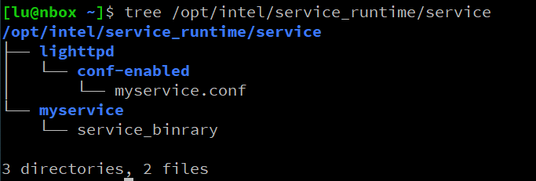

6. How to develop AI services for CCAI
6.1 CCAI service work mode
AI services for CCAI include two parts, one is client-side, the other is server-side. Customer applications are running on client-side. The CCAI services are running on server-side. Client-side sends http post requests or gRPC requests to server-side, and server-side replies responses to client-side. So developing AI services means development of server-side programs.
6.2 Preparation
CCAI includes four inference engines. They are Openvino, Pytorch, Onnx and Tensorflow. Each engine supports one type of model. The following sections describe how to use different inference engines in CCAI.
6.2.1 Using OpenVINO as inference engine in CCAI
Before developing, deploying your CCAI services which will use OpenVINO as inference engine, the following three are the preconditions you need to prepare:
First of all, you must get ready with available openvino models for your AI services. You can get the neural network models in two ways, one is from open_model_zoo on github (https://github.com/openvinotoolkit/open_model_zoo), and the other one is obtaining those models by converting models from other frameworks by openvino tool --- Model Optimizer (MO).
For making those models accessible for CCAI, they need to be in the directory ---
container/script/integration_workdir/service_runtime_binary/lfs/models.
a) *.xml(necessary)
b) *.bin(necessary)
c) *.labels(Optional)
There are default pictures in the test program. In order to facilitate user testing, The test data need to be placed in this directory
container/script/integration_workdir/service_runtime_binary/lfs/test_data.
6.2.2 Using PyTorch as inference engine in CCAI
If you only have PyTorch models or cannot convert PyTorch models into OpenVINO format successfully, you can choose to use PyTorch as a backend inference engine in CCAI, then please make sure you are ready with the following requirements:
Get your pytorch models, if your models include batch_normalization layers, you need to use model.eval() before saving models.
The weights need to be placed in the directory
container/script/integration_workdir/service_runtime_binary/lfs/models.
(a) *.pt
(b) *.txt(Optional for labels)
There are default pictures in the test program. In order to facilitate user testing, The test data need to be placed in this directory
container/script/integration_workdir/service_runtime_binary/lfs/test_data.
6.2.3 Using ONNX runtime as inference engine in CCAI
ONNX Runtime is an accelerator for machine learning models with multi platform support and a flexible interface to integrate with hardware-specific libraries. ONNX Runtime can be used with models from PyTorch, Tensorflow/Keras, TFLite, scikit-learn, and other frameworks.
In CCAI, the ONNX runtime inference engine is used only for inferencing ONNX models. Before developing AI services using ONNX runtime inference engine, please finish the following preparations:
Prepare your ONNX models. This model can be trained from any framework that supports export/conversion to ONNX format.
The model need to be placed in the directory container/script/integration_workdir/service_runtime_binary/lfs/models.
a)*.onnx
There are default pictures in the test program. In order to facilitate user testing, The test data need to be placed in this directory
container/script/integration_workdir/service_runtime_binary/lfs/test_data.
6.2.4 Using TensorFlow as inference engine in CCAI
Tensorflow is the most popular machine learning framework developed by Google. It can be used across a range of tasks but has a particular focus on training and inference of deep neural networks.
CCAI can leverage the Tensorflow framework to support tensorflow models. To use Tensorflow backend, please make sure you are ready with the following requirements:
The CCAI supports Tensforflow 2.x savedmodel format. The extension name is usually .pb. Currently, the 1.x format is not supported.
Place the model files into the directory container/script/integration_workdir/service_runtime_binary/lfs/models alone with label files if has.
There are default pictures in the test program. In order to facilitate user testing, The test data need to be placed in this directory container/script/integration_workdir/service_runtime_binary/lfs/test_data.
6.2.5 Using PaddlePaddle as inference engine in CCAI
If you only have PaddlePaddle models or cannot convert Paddle models into OpenVINO format successfully, you can choose to use Paddle as a backend inference engine in CCAI, then please make sure you are ready with the following requirements:
Get your paddlepaddle models.
The weights need to be placed in the directory
container/script/integration_workdir/service_runtime_binary/lfs/models.
(a) *.pdmodel
(b) *.txt(Optional for labels)
There are default pictures in the test program. In order to facilitate user testing, The test data need to be placed in this directory
container/script/integration_workdir/service_runtime_binary/lfs/test_data.
6.3 Development services
CCAI included a key component known as API gateway, which provides both Fast-CGI support and gRPC support to export services to externals of CCAI containers. So you can develop CGI based services or gRPC based services for CCAI as the following sections describe.
Notes: in those following sections, when we refer to a path with prefix "container" or "api-gateway", like "container/..." or "api-gateway/...", they are meaning the relative path under the project "container" which, as we had mentioned before, is the whole CCAI repositorys entry project, or relative path under the project "api-gateway" which is the project for developing all services.
6.3.1 Develop FCGI service
Develop fcgi AI services: you need to add new files or modify existing files under the directory api-gateway/cgi-bin
a) Add fcgi c++ services
i) 16-*.conf : The file includes the configuration information of fastcgi. You can select one existing configuration file as a reference. For example, add a new conf file by copying the 16-classfication.conf file. Replace the classification in the conf file with the new service name.
ii) fcgi_*.cpp: it is a fast_cgi server-side programthe file includes the neural network inference and fastcgi processing program. >
- For example, in the fcgi_classfication.cpp, the classification
function does neural network inference and gets the results.- You can create a new cpp file by copying the
fcgi_classfication.cpp file. And replace the classification function in the cpp file with your own service inference function. Keep unchanged for the fastcgi processing part. For your own inference function, it should include both preprocessing and postprocessing parts.- You also need to change the model_file param based on your
models name in container/script/integration_workdir/service_runtime_binary/lfs/models .- You need to change serverParams param to the real service url, just like the sample as "https://api.ai.qq.com/>".
- Neural network inference functions call low level runtime library APIs to do inference. Please refer to section 10 for the detailed description of runtime library APIs. For example, the classification inference function calls the API, vino_ie_pipeline_infer_image, to do inference. The parameters of this API are images, additionalInput , model_file, urlInfo, and rawDetectionResults. If the return value of API equals to 1 (res == 1), it gets the results from a local device. If it equals 0 (res==0), it gets the results from a remote device.
- Finally, using your own post-processing logic to process the inference result.
iii) test-script/test-demo/postlocal*_c.py: this is the fast cgi client-side test program. You can add a new file by copying the post_local_classfication_c.py file. Replace the classification in the file with the new service name. Modify the logic which is needed by your test file.
iv) CMakeLists.txt: Add new service compilation by add_fcgi_binary()
b) Develop fcgi python services: Adding fcgi python services is very similar to adding fcgi c++ services. The only difference is that you need to call low level python APIs to do inference. To add a new fcgi python service, you need to implement the following three files.
i) 16--py.conf ii) fcgi_.py: iii) test-script/test-demo/postlocal*_py.py:
6.3.2 Develop gRPC service
If you would like to modify the existing gRPC services, you can do by:
a) Change service program for server-side in api-gateway/grpc/grpc_inference_service.cc
b) Change test program for client-side in api-gateway/grpc/grpc_inference_service_test.py
c) Change message in api-gateway/grpc/inference_service.proto Then compile to get the new binaries.
You also can add a new gRPC server/client by your own, it is straightforward like general gRPC application development.
6.4 Deploy services for CCAI
6.4.1 Deploy into container
After you complete service development, you can compile those services to binary (for C++). And then deploy them in your host or into the CCAI container so that you can verify your services from outside of the CCAI container.
a) If you are developing with our pre-constructed development container, you can copy generated binaries or python applications to specific folders so that API gateway can recognize them and enable them. For example, if your working space is under your host $HOME which was mounted into the containe while the container booted.
Note: the following commands should be executed within docker
*copy fastcgi configuration file to target path
$>sudo cp your_fcgi.conf /etc/lighttpd/conf-enabled
*according to your_fcgi.conf, copy your binary or python script to correct path, for example:
$> sudo cp your_fcgi_service_binary /opt/fcgi/cgi-bi
*reboot CGI API gateway
$> sudo sv restart lighttpd
For gRPC service part, if youd like to change your service port (default is 8081 for our gRPC service), you need to add a line in file /etc/nghttpx/nghttpx.conf, for example:
$> sudo echo "backend=localhost,<your_service_port>;/<pacakge_name>.<service_name>/<function>;proto=h2" >> /etc/nghttpx/nghttpx.conf
To make the changes effective, restart the service:
$> sudo sv restart nghttpx
Now you can verify your services by your test application from the host.
b) If you are developing with your own development environment, then for testing your services, you can do as section a) above but change the path to your host path. .
c) For services generated from both a) and b), you can always copy them to project api-gateway and regenerate the CCAI container by following instructions in section 3.3.1 and 5.1.
6.4.2 Deploy on host
- Create a directory /opt/intel/service_runtime/service/your-service/ and put your binary file in this directory. Create a directory /opt/intel/service_runtime/service/lighttpd/conf-enabled/ and put your configuration file to this directory. The directory hierarchy example: 
Give permission for the user www-data to access your files, example:
$> chown -R www-data.www-data /opt/intel/service_runtime/service/
Binaries and configuration files will be mounted to the same path in the container as the host, so your should set the bin-path to /opt/intel/service_runtime/service/your-service/your-binary in your configuration file, example:
"bin-path" => "/opt/intel/service_runtime/service/your-serviceyour-binary"
6.4.3 Specific to PyTorch service
a) Currently the runtime inference library provides APIs to support Pytorch as an inference engine. These kinds of APIs are irt_infer_from_xxxx. Please refer to section 10 for detailed information. You need to pass the "PYTORCH" string to the API parameter to specify Pytorch as a backend engine. For example image API: irt_infer_from_image. The inputs are tensorData, model names , "PYTORCH" and urlinfo, the outputs are rawDetectionResults of tensorData.
b) In the inference with pytorch, the normalization of the input image should be done using opencv. In the inference of openvino, the normalization of the picture can be transferred to the model file through the "mean_values" and "scale_values" of MO of openvino.
6.4.4 Specific to Onnx service
a) The runtime inference library provides APIs to support ONNX as an inference engine. These kinds of APIs are irt_infer_from_xxxx. Please refer to section 10 for detailed information. You need to pass the "ONNXRT" string to the API parameter to specify ONNX as a backend engine. For example image API: irt_infer_from_image. The inputs are tensorData, model names , "ONNXRT" and urlinfo, the outputs are rawDetectionResults of tensorData.
b) The ONNX model may need to do preprocessing for input data, such as,transpose or normalization. Please add these preprocessing parts to your Onnx service.
6.4.5 Specific to Tensorflow service
a) The runtime inference library provides APIs to support Tensorflow as an inference engine. These kinds of APIs are irt_infer_from_xxxx. Please refer to section 10 for detailed information. You need to pass the "TENSORFLOW" string to the API parameter to specify TENSORFLOW as a backend engine. For example image API: irt_infer_from_image. The inputs are tensorData, model names , "TENSORFLOW" and urlinfo, the outputs are rawDetectionResults of tensorData.
b) The Tensorflow model may need to do preprocessing for input data, such as, transpose or normalization. Please add these preprocessing parts to your Tensorflow service.
6.4.6 Specific to PaddlePaddle service
a) Currently the runtime inference library provides APIs to support PaddlePaddle as an inference engine. These kinds of APIs are irt_infer_from_xxxx. Please refer to section 10 for detailed information. You need to pass the "PADDLE" string to the API parameter to specify PaddlePaddle as a backend engine. For example image API: irt_infer_from_image. The inputs are tensorData, model names , "PADDLE" and urlinfo, the outputs are rawDetectionResults of tensorData.
b) The PADDLE model may need to do preprocessing for input data, such as,transpose or normalization. Please add these preprocessing parts to your Paddlepaddle service.
6.5 Sample: Add a service for CCAI
6.5.1 Install packages
NOTE: If you are using the CCAI development docker image, you can skip this step. For more details about the CCAI development docker image, please refer to Chapter 4.
a. libfcgi-dev
b. libpython3.8-dev
c. Openvino (must be the same version in CCAI container)
6.5.2 Compose the header file
Collect necessary parts from section 10.4.1 of this manual, copy and paste them into the header file "inferenceservice.h". For example, we will use the image API. So the header should be:
#pragma once
// add necessary dependent headers
#include <memory>
#include <string>
#include <vector>
#include <opencv2/core.hpp>
// from 10.4.1.1
/**
*@brief Status code of inference
*/
#define RT_INFER_ERROR -1 //inference error
#define RT_LOCAL_INFER_OK 0 //inference successfully on local
#define RT_REMOTE_INFER_OK 1 //inference successfully on remote server
// from 10.4.1.2
/**
* @brief This is the parameters to do inference on remote server
*/
struct serverParams {
std::string url; //the address of server
std::string urlParam; //the post parameter of request
std::string response; //the response data of server
};
// from 10.4.1.4
/**
* @brief Do inference for image
* @param image Images input for network
* @param additionalInput Other inputs of network(except image input)
* @param xmls Path of IE model file(xml)
* @param rawDetectionResults Outputs of network, they are raw data.
* @param remoteSeverInfo parameters to do inference on remote server
* @return Status code of inference
*/
int vino_ie_pipeline_infer_image(
std::vector<std::shared_ptr<cv::Mat>>&image,
std::vector<std::vector<float>>& additionalInput, std::string xmls,
std::vector<std::vector<float>*>& rawDetectionResults,
struct serverParams& remoteServerInfo);
6.5.3 Extract service runtime library from CCAI container
NOTE: If you are using the CCAI development docker image, you can skip this step. For more details about the CCAI development docker image, please refer to Chapter 4.
$> docker run --rm <image> tar -C /usr/lib/x86_64-linux-gnu -cf -libinferservice.so | tar -xf -
6.5.4 Write the main source code
Create file "demo.cpp":
#include <algorithm>
#include <fstream>
#include <string>
#include <vector>
#include <fcgiapp.h>
#include <opencv2/imgcodecs.hpp>
#include "inferenceservice.h"
const char* model_path = "./models/bvlc_alexnet.xml";
const char* label_path = "./models/bvlc_alexnet.labels";
int main(int argc, char *argv[]) {
// read label file
std::vector<std::string> labels;
std::ifstream label_stream(label_path);
if (label_stream.is_open()) {
std::string line;
while (std::getline(label_stream, line)) {
size_t s, l;
if ((s = l = line.find('\\'')) == std::string::npos)
s = 0;
else if ((l = line.find('\\'', ++s)) != std::string::npos )
l = l - s;
labels.emplace_back(line, s, l);
}
}
// init fcgi handle
FCGX_Request cgi;
if (FCGX_Init() || FCGX_InitRequest(&cgi, 0, 0))
return 1;
while (!FCGX_Accept_r(&cgi)) {
std::string response = "Status: ";
size_t length;
char *val;
if (!(val = FCGX_GetParam("CONTENT_TYPE", cgi.envp)) ||
strcmp(val, "application/octet-stream")) {
response += "415 Unsupported Media Type";
} else if (!(val = FCGX_GetParam("CONTENT_LENGTH", cgi.envp)) ||
!(length = strtoul(val, \&val, 10)) || *val) {
response += "411 Length Required";
} else {
// read body
std::vector<char> data(length);
FCGX_GetStr(data.data(), length, cgi.in);
// do inference
std::vector<float> result;
std::vector<std::vector<float>> supplement;
std::vector<std::vector<float>*> results = { \&result };
struct serverParams remote_info;
cv::Mat image = cv::imdecode(data, 1);
std::vector<std::shared_ptr<cv::Mat>> images = {
std::make_shared<cv::Mat>(image)
};
int rc = vino_ie_pipeline_infer_image(images, supplementmodel_path, results, remote_info);
// generate response
response += "200 OK\r\n" "Content-Type: text/plain\r\n\r\n";
if (rc == RT_REMOTE_INFER_OK) {
response = "Status: 501 Not Implemented";
} else if (rc) {
response += "inference error";
} else {
auto max = std::max_element(result.cbegin(), result.cend());int idx = std::distance(result.cbegin(), max);
response += "tag: " + labels[idx] + "\n"
"confidence: " + std::to_string(*max) + "\n";
}
}
FCGX_PutStr(response.c_str(), response.size(), cgi.out);
}
FCGX_Free(&cgi, 1);
return 0;
}
6.5.5 Build the program
g++ -o fcgi_demo -I /opt/intel/openvino/opencv/include demo.cpp libinferservice.so -L/opt/intel/openvino/opencv/lib -lopencv_imgcodecs -lopencv_core -lfcgi -Wl,--allow-shlib-undefined,--no-as-needed -lpython3.8
6.5.6 Write the configuration file
Create file "16-demo.conf":
fastcgi.server += (
"/cgi-bin/fcgi_demo" => ((
"socket" => "/tmp/fcgi_demo.socket",
"bin-path" => "/opt/fcgi/cgi-bin/fcgi_demo",
"check-local" => "disable",
"max-procs" => 1,
"bin-copy-environment" => ("PATH", "SHELL", "USER",
"http_proxy", "HTTP_PROXY",
"https_proxy", "HTTPS_PROXY",
"no_proxy", "NO_PROXY", "cl_cache_dir"),
"bin-environment"=>(
"LD_LIBRARY_PATH"=>"/opt/intel/openvino/opencv/lib:/opt/intel/openvino/deployment_tools/ngraph/lib:/opt/intel/openvino/deployment_tools/inference_engine/external/tbb/lib:/opt/intel/openvino/deployment_tools/inference_engine/lib/intel64"
),
))
)
6.5.7 Build docker image
Create the Dockerfile:
FROM service_runtime
COPY --chown=www-data:www-data fcgi_demo /opt/fcgi/cgi-bin/
COPY 16-demo.conf /etc/lighttpd/conf-enabled/
Build image:
docker build -t ccai-demo .
6.5.8 Test
Start the ccai-demo container and run command:
curl -X POST -H "Content-Type: application/octet-stream" --data-binary @picture.jpg http://localhost:8080/cgi-bin/fcgi_demo